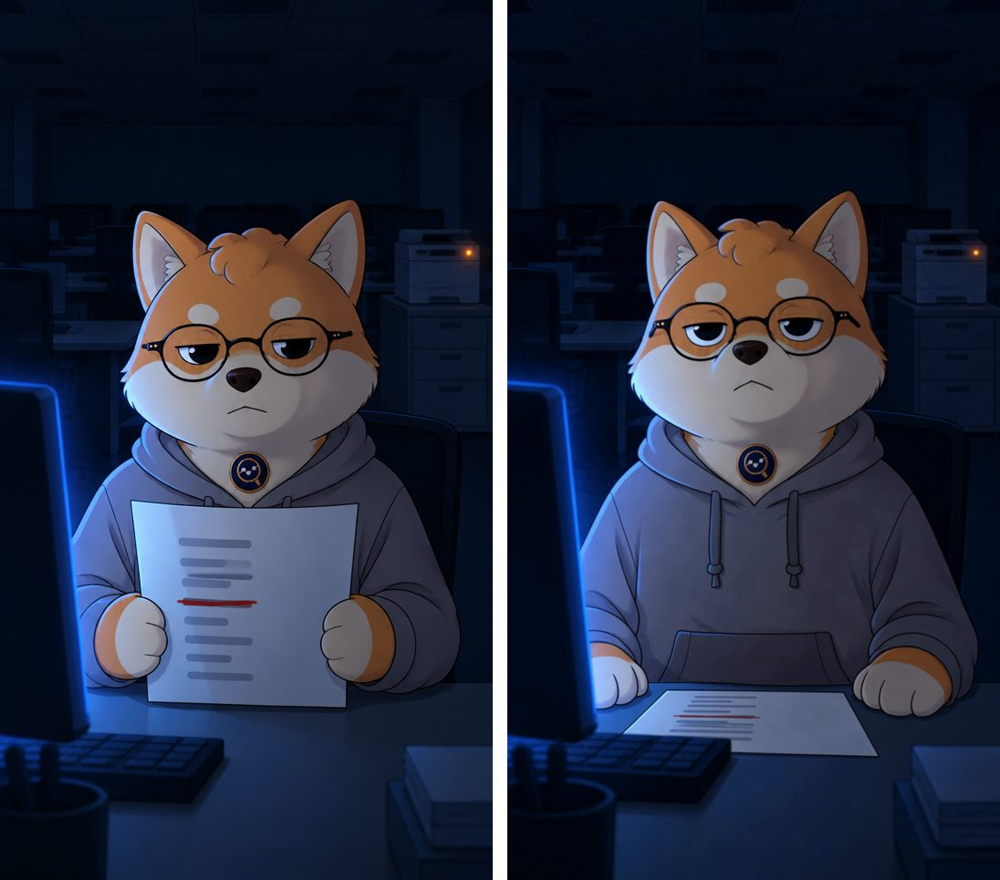

阿旺的 Prompt 库← 全部视频
阿旺的 Prompt 库← 全部视频我把那个 10 条视频涨 22 万粉的动画号拆了一遍，再用同一类工具做了阿旺版第一集：先出一张 2D 首帧，再让它动起来。

左：GPT Image 出的首帧 右：Kling 4.0 动起来后的最后一帧
工具人人都有。难的是你那个第一集：一句话就让人想知道下一集。
阿旺这集只拍一个画面：凌晨 3 点，加薪名单上只有他的名字被划掉。故事分拍是这样写的，换成你自己的角色和事件就行：
1. 3 a.m. A-Wang is the last one in the dark office, slumped at his desk. 2. The printer suddenly wakes up and prints one page. 3. Close-up: the page is the boss's raise list for next year. 4. Only one name is crossed out in red: A-Wang. 5. A-Wang slowly folds the page and puts it in his hoodie pocket. 6. He stares at the camera. Tomorrow, he will do something. You decide what.
最后一句「你来决定」就是投票钩子，让观众留言，下一集照留言拍。
先上传你的角色照片，再贴下面这段。阿旺用的是毛绒公仔的照片，它会重画成 2D 卡通版：
Image 1角色照片（只拿脸、颜色、眼镜、徽章，不拿背景）Image 1 is the character reference only: a shiba inu plush mascot with orange fur, cream face and chest, round thin black glasses, a small round dark badge on the chest. Do not copy the photo style, pose, background or lighting of Image 1. Create a single frame from a 2D illustrated animated short, in the style of clean modern webcomic animation: bold clean outlines, flat colors with soft cel shading, moody cinematic mood. The character is redrawn as a simple 2D cartoon version of this shiba: same orange and cream colors, same round thin black glasses, same small round dark chest badge, tired half-closed deadpan eyes, wearing a plain grey hoodie. Scene: 3 a.m., a dark empty open-plan office. Medium shot at seated eye level, vertical 9:16. The cartoon shiba sits at his desk in the center of the frame, seen from the chest up with the desk edge at the bottom, holding one printed A4 page up in both paws with the page facing the camera. On the page: several short grey lines like a list of names, and exactly one line in the middle is crossed out with a thick red pen stroke. No readable words or letters anywhere. Background: rows of empty desks fading into darkness, one office printer on a cabinet behind him on the right with a small glowing orange status light. Lighting (only these two sources): the only main light is the cold blue glow of his computer monitor at the front-left of him, lighting the left side of his face and the paper; the right side of his face falls into soft blue-grey shadow. The only other light is the small warm orange dot on the printer behind him. Ceiling lights are off. No other lamps or windows. No text, no captions, no logos, no brand names.
光线只写一个主光源（左边电脑屏幕的蓝光），画面才有立体感，不会平平的。
Start frame上一步出的首帧图Image 1 is the start frame. Keep its exact 2D illustrated cartoon style (bold clean outlines, flat colors, soft cel shading), the same character, the same office, the same framing. 2D animation, not 3D, not live action. LIGHT (fixed for the whole shot, exactly as in the start frame): the only main light is the cold blue glow of the computer monitor at the screen-left foreground, lighting the left side of the shiba's face and the paper; the right side of his face stays in soft blue-grey shadow. The only other light is the small warm orange status dot on the printer behind him on the right. Ceiling lights stay off. No new lights, light never changes direction. CAMERA: completely locked tripod. No push-in, no zoom, no pan, no tilt, no cut. Framing stays identical to the start frame. BADGE: the small round dark badge on his chest is a flat embroidered patch sewn tightly onto his chest fur, like part of the costume. It does not hang, swing, bounce, slide or change size. It stays at exactly the same spot on his chest and only moves together with his chest, which barely moves. ACTION (one thing at a time, small and slow): 0.0-1.5s: he slowly lowers the page flat onto the desk with both paws; his shoulders and chest stay almost still, only his arms move. 1.5-2.5s: still. One small slow swallow. 2.5-4.0s: he lifts only his eyes to look straight into the camera, one slow tired blink, deadpan half-closed eyes, mouth closed. Head stays still. He stays still to the end. RESTRAINT: no smile, no open mouth, no talking, no leaning forward, no body bounce. Glasses stay on his face. The paper keeps grey lines and exactly one red line; no readable text, no logos. No audio.
踩过的坑：第一次镜头有慢慢推近，胸前的徽章跟着晃，看起来很假。改成镜头完全不动，再写明徽章是「缝在胸口的布章」，就稳了。
首帧图和 Kling 4.0 动画都是在 Higgsfield 上做的。用下面的链接注册，登录后会有最高 5 折的个人折扣。
这是推广链接，你通过它订阅的话，阿旺会拿到一点佣金，你的价格不会变贵。折扣在登录后 3 小时内有效，建议先想好要哪个方案再点。